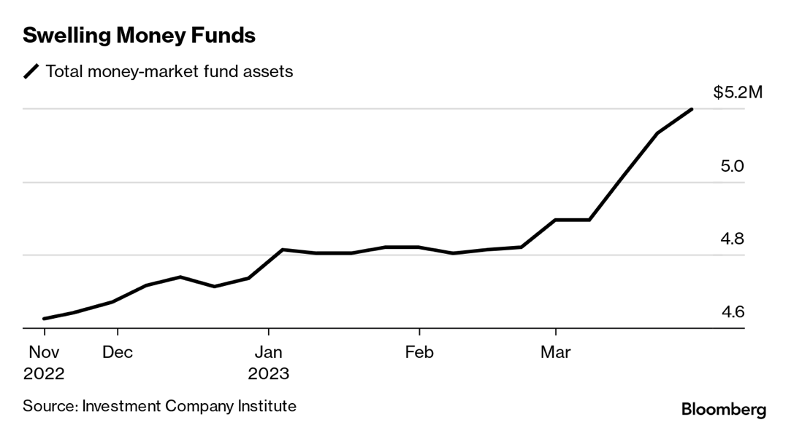

Fred's News Channel
每日新闻
投资观点
常用工具
4月7日早间新闻
根据彭博社及路透社新闻编辑整合
国际货币基金组织发表了自1990年以来最弱的未来增长预期。IMF 预测由于高利息的原因，世界未来五年年化经济增长幅度为3%。
详情链接

Money Market（也就是一年期以内的债券市场） 的净流入达到了3500亿美元。总额达到了5.25 万亿美元。
美国周五发布就业报告。（美国好像很少在公共假日发表就业报告）高盛发表报告，称第一季度美股SP500的每股盈利能力（EPS）将下降7%。
详情链接
个人观点：
经济学人（Economist）最近出了一个专稿，讲中美关系的。讲的挺好的。链接我放这里了。（Spotify 里面也有）里面最大的一个问题就是中美都已经停止了尝试理解彼此的立场。美国对内就是不停渲染中国是一个专制国家，他的崛起会影响和平。中国对内就是不停强调美国对中国的打压，敌人亡我之心不死。
经济学人文章链接
上个月在北京举行的中国发展高层论坛中，德国CEO基本100%出席，而美国CEO大量缺席。并不像微信朋友圈说的很多美国CEO还是来了。很多缺席。而且来的也是在探讨如果中美分家，他们要怎么止损。
这个时候的投资一定要注意分散跟安全。我个人持续看好传统能源（5个月后又是冬天了），材料（战略金属），债券（IG为主），日本，东南亚，以及中国（21/22跌落太多）。
查看其他日期的新闻
Fred Rong
MAS Registered
RF-300558704
投资咨询,欢迎预约！
立即预约